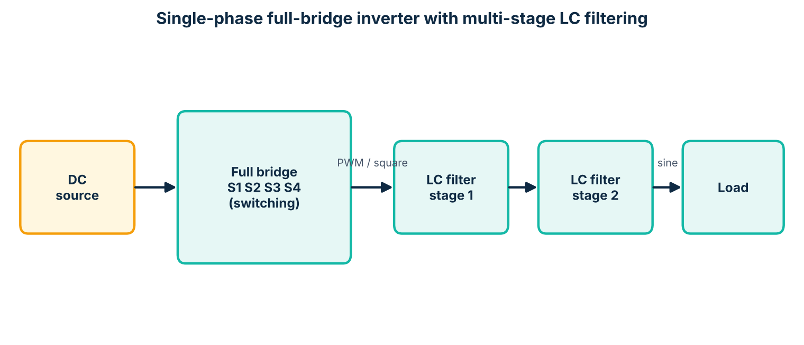

Overview
I designed and implemented a single-phase full-bridge inverter. A multi-stage LC filter sits between the bridge and the load to turn the switched output into a clean AC waveform.
Objective
Convert a DC input into a single-phase AC output with low harmonic distortion at the load.

Thought Process and Decisions
- Pick the topology. A full bridge uses four switches and gives a full-amplitude AC swing from a single DC source, which suits a single-phase output.
- Choose the switching scheme. The four switches are driven in pairs so that the bridge output alternates polarity at the target frequency.
- Design the filter. The bridge output contains switching harmonics. An LC filter removes them, and using more than one stage lowers the distortion further than a single stage with the same total size.
- Simulate before building. I simulated the circuit first to check the waveform and the filter response, and to catch mistakes before using real components.
- Implement and test. I then implemented the inverter and compared the output with the simulation.
Results and Evidence
Screenshots, waveforms and test results for this project:


My Contribution
I was responsible for the design and simulation work described above: choosing the architecture, making the design decisions, building the model and evaluating the results.
Skills Demonstrated
- Power electronics
- Filter design
- Circuit simulation
- Hardware implementation